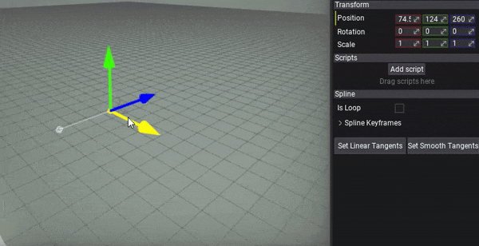
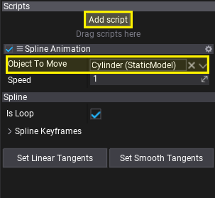
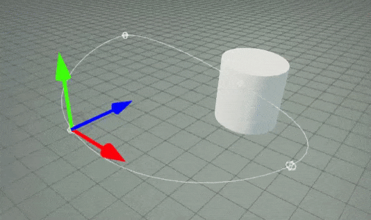

HOWTO: Animate object over spline
In the following tutorial, you will learn how to move an object over the spline.
Tutorial
1. Create spline
Follow this tutorial. Alternatively, set it to Loop to have continuous animation.

2. Create script
Follow scripting documentation about creating new scripts and make a new script named SplineAnimation and write the following contents:
using System;
using FlaxEngine;
public class SplineAnimation : Script
{
private float _time;
private Spline _spline;
[Tooltip("The speed of the object animation over the spline.")]
public float Speed = 1.0f;
[Tooltip("The actor to move it over the spline.")]
public Actor ObjectToMove;
public override void OnEnable()
{
// Cache spline actor
_spline = Actor.As<Spline>();
if (!_spline)
throw new Exception("Attach script to a spline.");
}
public override void OnUpdate()
{
if (!_spline || !ObjectToMove)
return;
// Update position
_time += Time.DeltaTime * Speed;
// Evaluate the spline curve
var direction = _spline.GetSplineDirection(_time);
var transform = _spline.GetSplineTransform(_time);
// Place object on the spline and make it oriented along the spline direction
transform.Orientation = Quaternion.LookRotation(direction, Vector3.Up) * transform.Orientation;
ObjectToMove.Transform = transform;
}
}
3. Setup
Select Spline and click Add script button. Then pick your new script to attach it to the spline. Finally, choose the actor to move over the spline by setting Object To Move property on the script.

4. Test it out!
Now, hit play button and see the object moving along the spline. You can even edit spline while it moves over it.
